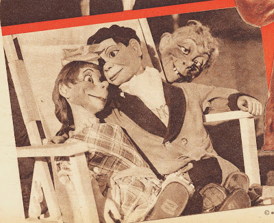

Elmer and Peggy?
8/16/2011
{kind=link}

From the May 6, 1938 issue of The Family Circle:
Besides Charlie McCarthy, Edgar Bergen has two other dummies - Elmer and Peggy, Both were created about a year and a half ago.
Peggy is a girl of New York's lower East Side, with all the language and looks of a child of that section. She has red hair, wears a calico dress, is greatly animated, and really tough. Yet, for all her rough talk, she is a lovable character.
Elmer is a country goof. He is cross-eyed and has buck teeth and straw-blond hair. He is stolid and dumb, mentally. Bergen uses Elmer and Peggy in night clubs exclusively, and usually for encore numbers, for he doesn't think either is suitable for radio or screen. Peggy's language is a bit too outspoken, and Elmer's voice lacks distinction - it's too much like hundreds of country voices.
So Elmer and Peggy appear destined never to rise above the ranks of bit players. Unlike Charlie, they will never become stars.
* * * * *
From Mr. D: Well, the above was written 73 years ago, and Bergen's prediction was half right. "Elmer" quickly evolved into the lovable Mortimer who was, indeed, a star in the eyes of his admiring public. Thanks to George Boosey, I do have a vintage copy of this issue of Family Circle magazine and it is being awarded in today's drawing to: Jeff Pennell.